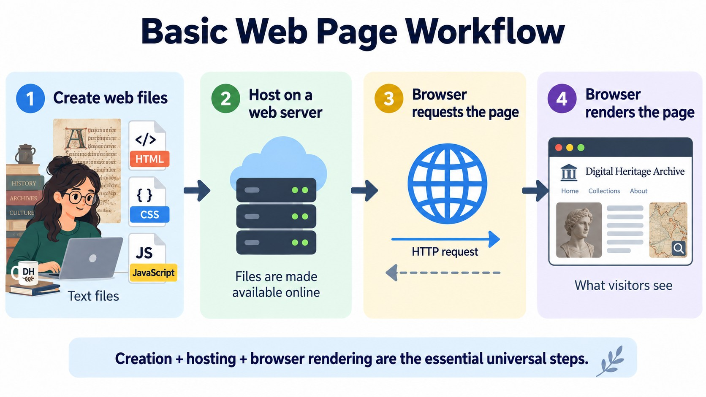
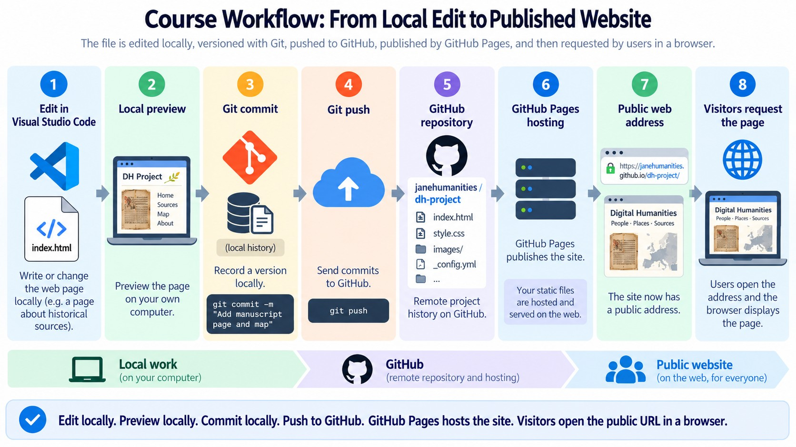

Goal for the first academic hour: understand where your files are, what each tool is responsible for, and what actually happens when you save, commit, pull, push, synchronize, and finally open the published page in a browser.
1. The generic web development workflow
At its simplest, web development is an editing-and-testing cycle. We create files, view the result in a browser, revise the files, and eventually place a tested version on a web server so that other people can request it over the Internet.

Source files
The website starts as ordinary text and media files. HTML describes content and structure; later we will add CSS for presentation and JavaScript for behavior.
Local preview
Your browser can open the files on your own computer. This lets you inspect the result immediately while you work, before anything is published.
Published website
A public web server makes the files available through URLs. Visitors do not need your editor or your Git history; their browser requests the published files.
2. The workflow used in this course
We will use a specific set of widely used tools to implement the generic workflow. Each tool has a different responsibility. Keeping those responsibilities separate is more important than memorizing buttons.

3. What is each technology?
Visual Studio Code
VS Code is the code editor we use to work with HTML and other project files. It also provides a file explorer, terminal, Git interface, extensions, and integration with GitHub.
It edits files. It is not Git, GitHub, or the web server.
Git
Git is a distributed version control system. It runs on your computer and records the history of a repository as a sequence of commits.
For research work, this is useful provenance: you can see what changed, when, and in which recorded version.
GitHub
GitHub is an online service that can host Git repositories. It gives our local repository a remote location that can be accessed from different computers and shared with others.
Git is the version-control technology; GitHub is a service built around it.
GitHub Pages
GitHub Pages is static web hosting connected to a GitHub repository. It can take HTML, CSS, JavaScript, images, and other static files from the repository and serve them through a public HTTPS URL.
The repository view shows source and history. GitHub Pages shows the website as a browser visitor sees it.
4. Four places to keep mentally separate
| Place | What is there? | Typical action |
|---|---|---|
| Working folder your computer |
The files you are currently editing. | Save a change in VS Code. |
| Local Git repository your computer |
Project files plus recorded commit history. | Stage and commit. |
| Remote repository GitHub |
A remote copy of the Git repository and its branches. | Push or pull commits. |
| Published site GitHub Pages |
Web files served to browsers through a public URL. | Open and verify the website. |
Key distinction: changing a file in VS Code does not automatically create a Git commit; creating a commit does not automatically send it to GitHub; and having files on GitHub is not quite the same thing as serving them as a website.
5. Vocabulary for the workflow
| Term | Meaning in this course | Useful mental model |
|---|---|---|
| Repository or repo | A project tracked by Git, including its files and history. | A research project folder with a formal change history. |
| Clone | Create a local copy of an existing Git repository, including its history, and connect it to the remote repository. | Bring the project and its version history onto your computer. |
| Stage | Select changed files or parts of files for the next commit. | Choose what belongs in the next recorded checkpoint. |
| Commit | Record the staged changes in the local Git history with a message. | A named checkpoint in the project's history. |
| Push | Send local commits to the corresponding branch in the remote GitHub repository. | Transfer your recorded checkpoints to GitHub. |
| Pull | Get changes from the remote repository and integrate them into your current local branch. | Bring the newer shared history back to your computer. |
| Sync | In VS Code, a convenience operation that synchronizes the current branch with its remote, normally pulling incoming changes and pushing outgoing commits. | Reconcile the local and GitHub copies in both directions. |
| main | The primary branch used by this course repository. | The main line of recorded project history. |
| origin | The conventional Git name for the remote repository from which a project was cloned. | A short local name that points to the GitHub repository. |
6. Saving, committing, pushing, and publishing are different
These actions are often confused when Git is new. They happen at different layers.
| Action | Where does it happen? | What changes? |
|---|---|---|
| Save | Your working folder | The file on your computer is updated. |
| Commit | Your local Git repository | A new recorded version is added to local history. |
| Push | Local Git → GitHub | Your local commits are transferred to the remote repository. |
| Publish through GitHub Pages | GitHub → Web | The selected repository files become available as a website. |
7. Our normal course routine
- Open the repository folder in VS Code. Make sure you are working in the intended project, not in a random copy of a file.
- Synchronize or pull before starting. This matters especially when the repository may have changed elsewhere.
-
Edit and save files.
For Week 2, the main file will be
index.html. - Preview in a browser. Observe the visible result, modify the source, and refresh. Development is an iterative cycle.
- Inspect the Git changes. VS Code's Source Control view shows which files changed and lets you inspect the differences.
-
Stage and commit a coherent change.
Use a short message that says what the checkpoint represents, for example
Add basic page headings and links. - Push or Sync Changes. Transfer the commit to GitHub and resolve incoming changes first if necessary.
- Verify both GitHub and the GitHub Pages site. The repository confirms that the source reached GitHub; the Pages URL confirms that the published site works in a browser.
8. The same workflow from the terminal
VS Code gives us a graphical interface for Git, but it is useful to recognize the commands underneath. We do not need to memorize all of them today.
| Intent | Typical Git command | VS Code equivalent |
|---|---|---|
| Inspect current state | git status |
Source Control view |
| Get remote changes | git pull |
Pull / Sync Changes |
| Stage a file | git add index.html |
Stage Changes (+) |
| Create a checkpoint | git commit -m "Describe the change" |
Commit |
| Send commits to GitHub | git push |
Push / Sync Changes |
9. Why this matters in Digital Humanities
The tooling is not only for commercial software development. The same workflow is valuable when a DH project contains a digital exhibition, scholarly edition, corpus interface, research narrative, visualization, documentation site, or a small public demonstrator for a research project.
Reproducibility
A commit identifies a specific recorded state of the project rather than an ambiguous file such as final_v7_really_final.html.
Provenance
Git history helps reconstruct how a digital object changed and why particular edits were introduced.
Collaboration
A remote repository provides a shared technical space for source files, history, review, and coordination.
Publication
GitHub Pages provides a low-friction way to publish static research outputs and teaching examples directly from version-controlled source.
10. What we are learning today, and what comes later
Today we concentrate on the workflow and on HTML: the language that gives a web document its content and structure. We will deliberately use the browser's default appearance while learning HTML.
- Week 2: development workflow and HTML basics.
- Week 3: more HTML, semantic structure, forms, tables, URLs, and accessibility basics.
- Week 4: CSS begins: presentation, selectors, cascade, typography, colors, and spacing.
- Later: JavaScript adds behavior and interaction.
About this teaching page: it already uses CSS to make a long reference page easier to read. You are not expected to understand that styling yet. During today's live coding, we will work with much smaller HTML files and let the browser use its default styling.
11. Before we start coding: can you answer these?
- What is the difference between Git and GitHub?
- If you save
index.html, has the change been committed? - If you commit locally, has the change reached GitHub?
- What does
git pushmove, and in which direction? - Why might you pull or sync before starting new work?
- What is the difference between viewing a file on GitHub and viewing the same file through GitHub Pages?
- Which part of our workflow provides the public website?